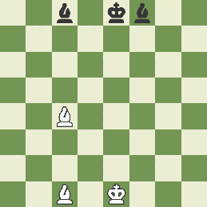
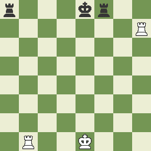
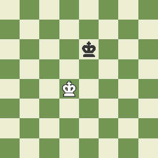
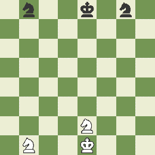
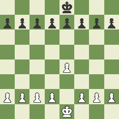
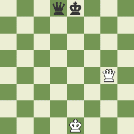

El ajedrez tiene su origen en la India, más concretamente en el Valle del Indo, y data del siglo VI d.C. Originalmente conocido como Chaturanga, o juego del ejército, se difundió rápidamente por las rutas comerciales, llegó a Persia, y desde allí al Imperio bizantino, extendiéndose posteriormente por toda Asia. La mayoría de los historiadores coinciden en ubicar el origen del ajedrez en la India en el siglo VII. El mundo árabe, adoptó el ajedrez con un entusiasmo sin igual: estudiaron y analizaron en profundidad los mecanismos del juego, escribieron numerosos tratados sobre ajedrez y desarrollaron el sistema de notación algebraica.
El juego llegó a Europa entre los años 700 y 900, a través de la conquista de España por el Islam, aunque también lo practicaban los vikingos y los Cruzados que regresaban de Tierra Santa. En las excavaciones de una sepultura vikinga hallada en la costa sur de Bretaña se encontró un juego de ajedrez, y en la región francesa de los Vosgos se descubrieron unas piezas del siglo X, de origen escandinavo, que respondían al modelo árabe tradicional. Durante la edad media España e Italia eran los países donde más se practicaba. Se jugaba de acuerdo con las normas árabes (descritas en diversos tratados de los que fue traductor y adaptador Alfonso X el Sabio), según las cuales la reina y el alfil son piezas relativamente débiles, que sólo pueden avanzar de casilla en casilla.
En el año 1851: Tiene lugar el primer torneo moderno de ajedrez en Londres, ganado por el alemán Adolf Anderssen.
Piezas del ajedrez.
| Piezas | ||
|---|---|---|
| Blancas | Negras | Descripcion |
| Un rey (R) | ||
| Una dama (D) | ||
| Dos alfiles (A) | ||
| Dos caballo (C) | ||
| Ocho peones (P) | ||

El reloj de ajedrez.
Es un reloj de doble esfera que contabiliza el tiempo invertido por cada jugador al pensar sus jugadas durante una partida de ajedrez. Estos relojes se utilizan en ajedrez y otros juegos por turnos entre dos jugadores. Los relojes de ajedrez tienen botones para detener un reloj y poner en marcha el otro, de modo que los dos relojes nunca funcionen
El propósito de los relojes de ajedrez es controlar los límites de tiempo de una partida de ajedrez, para evitar que la partida o el turno de uno de los jugadores se prolongue indefinidamente.
Los relojes cuentan con otras características que determinan su funcionamiento, como:
- Tiempo de control: es el tiempo total asignado a cada jugador para completar toda la partida. Por
ejemplo, un tiempo de control de 60 minutos
significa que cada jugador tiene 60 minutos para realizar todos sus movimientos.
- Incremento de tiempo: es un tiempo adicional que se agrega al reloj de un jugador después de cada
movimiento. Por ejemplo, un incremento de 5 segundos
significa que después de efectuar un movimiento, se añaden 5 segundos al reloj del jugador.
- Control de tiempo: es la forma en que se regula el tiempo de juego en una partida de ajedrez. Puede
haber diferentes tipos de control de tiempo, como el
control de tiempo estándar (donde los jugadores tienen un tiempo fijo para toda la partida) o el control
de tiempo por movimientos (donde los jugadores deben
hacer un número determinado de movimientos en un tiempo establecido).
- Bandera caída: es una situación que ocurre cuando un jugador agota todo su tiempo antes de terminar la
partida. En ese caso, se dice que el jugador ha perdido
por bandera caída.
Reglas del ajedrez.
Cada jugador dispone de dieciséis trebejos (piezas) de seis tipos distintos, de los cuales cada jugador tiene: ocho peones, dos torres, dos caballos, dos alfiles, una dama y un rey. Cada pieza se mueve en el tablero de forma diferente.
-. El juego es por turnos entre dos contrincantes, el jugador con las piezas blancas mueve primero.
-. Una partida de ajedrez también termina cuando un jugador decide rendirse o abandonar, o si excede el tiempo establecido; en ambos casos el oponente gana el juego.
-. También la partida termina cuando no es posible la victoria para ninguno de los jugadores, o si ambos acuerdan este resultado, conocido como tablas o empate. Igualmente la partida termina en tablas si se repite tres veces la misma posición sobre el tablero (por repetición de jugadas).
-.También hay casos cuando ninguno de los jugadores tiene piezas suficientes para dar jaque mate, o si el jugador que tiene el turno no puede realizar ninguna jugada reglamentaria, situación conocida como ahogado.
Formas de ganar:
Agotamiento del Tiempo
En partidas con control de tiempo, si un jugador agota su tiempo, pierde automáticamente, a menos que su oponente no tenga suficientes piezas para dar jaque mate (en ese caso sería un empate).Formas de empatar
Insuficiencia de material


Regla de los 50 Movimientos

Movimiento de la piezas
Alfiles
Solo se puede mover en dirección diagonal, tantas casillas como se desee,hasta llegar al final del tablero o ser bloqueado por otra pieza.
Torres
Solo se puede mover en las direcciones verticales y horizontales, no en diagonal, las casillas que se desee.
Rey
Se puede mover en cualquier dirección (vertical, horizontal y diagonales) avanzando o retrocediendo una sola casilla. Siendo la pieza mas debil.
Caballo
Se dice que se mueve avanzando dos casillas en vertical y una en horizontal, o viceversa, realizando un movimiento de ‘L’, siendo la única pieza que puede saltar por encima de las demás piezas.
Peon
Los peones en su primer movimiento puede avanzar una o dos casillas en dirección vertical; después de su primer movimiento solo puede avanzar una casilla en cada movimiento en dirección vertical. A diferencia del resto de piezas no puede ir hacia atrás y no puede capturar las piezas contrarias que se encuentran en la misma columna en la que se mueve;; solo podrá hacerlo si se encuentran a una casilla en diagonal respecto a él
Reina
se puede mover en cualquier dirección (vertical, horizontal y diagonales) avanzando o retrocediendo en el tablero el número de casillas que se desee, hasta topar con otra pieza o el borde del tablero. Siendo la mas poderosa de todas las piezas. Si la reina captura la pieza de un oponente, su movimiento ha terminado.
